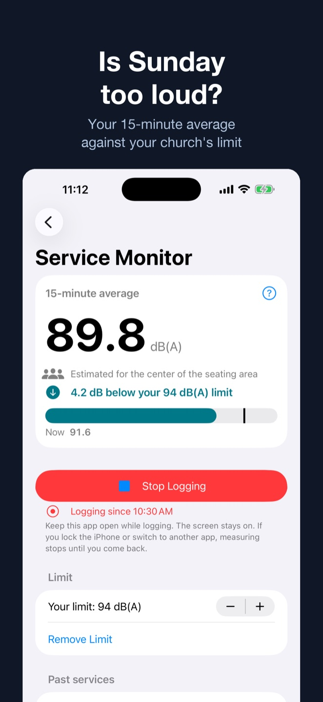
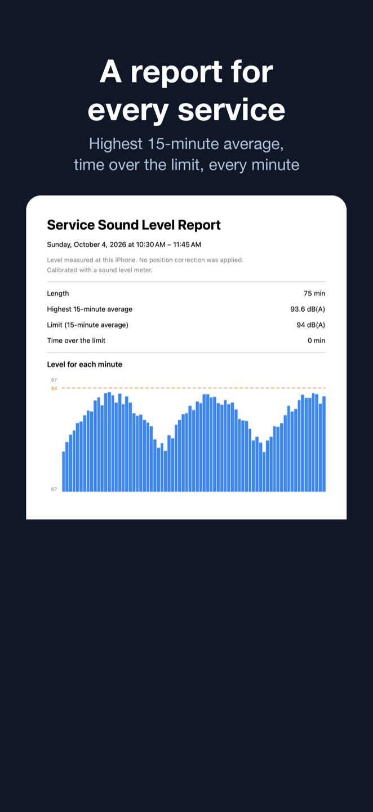
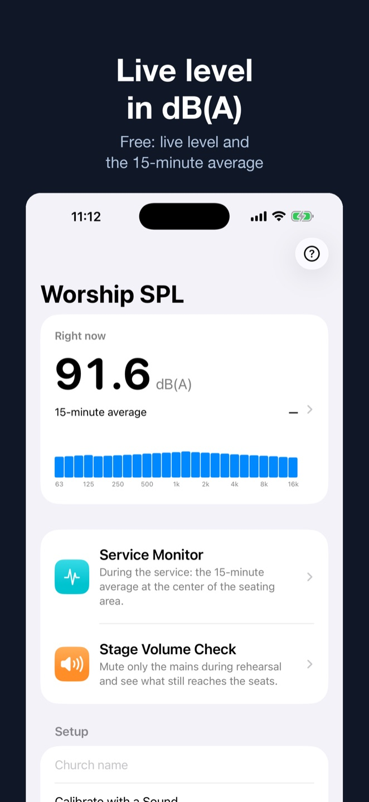
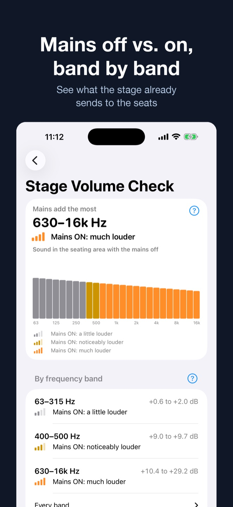

Keep your iPhone at the mixer, log each service, and share a one-page sound level report with your pastor and team.
Free download. Free live level and 15-minute average. Service logs and PDF reports require a subscription with a 14-day free trial.

Service Monitor

One-page report

Live level, free
Worship SPL: Church Volume is an iPhone app for church sound volunteers. It tracks worship service sound levels, logs each service, and creates a one-page PDF report for the pastor and sound team. It needs iOS 17 or later. No audio is recorded or saved.
Screens show sample data.
See the one-page report you can share
This is a sample of the one-page PDF report Worship SPL creates for a service. The church, the date and every number are fictional. It is not a real church’s report. It was recreated from the layout and calculations the app uses, with made-up levels. It is not a file exported from the app. This sample is a calibrated report, so it shows dB(A).
Start logging. It saves one level per minute, the highest 15-minute average, and the time over your church’s limit.
After the service, share the one-page PDF with your pastor and sound team.
What the numbers mean
Levels are estimates from an iPhone microphone. They are not a certified measurement, and they do not tell you whether a service meets any rule or standard.
Calibrate once against a sound level meter to see dB(A). Without calibration, levels are relative and are not compared with your limit.
The report says where the level was taken: at the iPhone, or, with Position Correction, an estimate at the center of the seating area.
“Time over the limit” counts the minutes when the 15-minute average was above the limit your church chose. The app does not set a limit for you.
No audio is recorded, saved or sent anywhere.
Free and subscription
Free: live level and the 15-minute average.
Subscription: service logs and PDF reports, inviting your team, Stage Volume Check and Position Correction. $4.99 per month, or $39.99 per year. New subscribers get a 14-day free trial. Cancel any time in Settings > Apple Account > Subscriptions.
If you have an offer code, open the Subscription screen in the app and use “Redeem Code”.
More tools for your sound team
Share with your team
Invite your team through iCloud. Everyone sees the same limit, position correction, checks and service logs. Invited members join at no charge with their own Apple Account.
Stage Volume Check
During rehearsal, mute only the mains at the times the app shows. The iPhone at the center of the seating area compares mains off and on in 1/3-octave bands, three times, so you see how much of the sound at the seats comes from the stage. You need a tripod and the band playing the same part for about three minutes.

Position Correction
If your mixer isn’t in the middle of the room, measure a correction once with pink noise played through the mains from a second device. After that, the iPhone at the mixer estimates the level at the center of the seating area.
Common questions
What iPhone app can track church worship volume?
Worship SPL: Church Volume tracks sound levels during church services. Keep an iPhone at the mixer to log one level per minute, the highest 15-minute average, and time over your church’s chosen limit. It creates a one-page PDF report to share with your pastor and sound team.
Is Worship SPL a certified decibel meter?
No. It shows estimated sound levels. Without calibrating the iPhone once against a sound level meter, the readings are relative. It is not a certified sound level meter.
Does it record the worship service?
No. Audio is analyzed on your iPhone as it comes in. It is not recorded, saved or sent anywhere.
Why a 15-minute average?
A set is judged by how loud it stays, not by a single loud hit. Life.Church, for example, describes its target as an average over 18 minutes of worship. See how loud church worship should be for the numbers other teams publish.
Where are the records kept?
On your iPhone. If you invite your team, they are stored in your iCloud account and shared with the people you invite. We cannot see them.